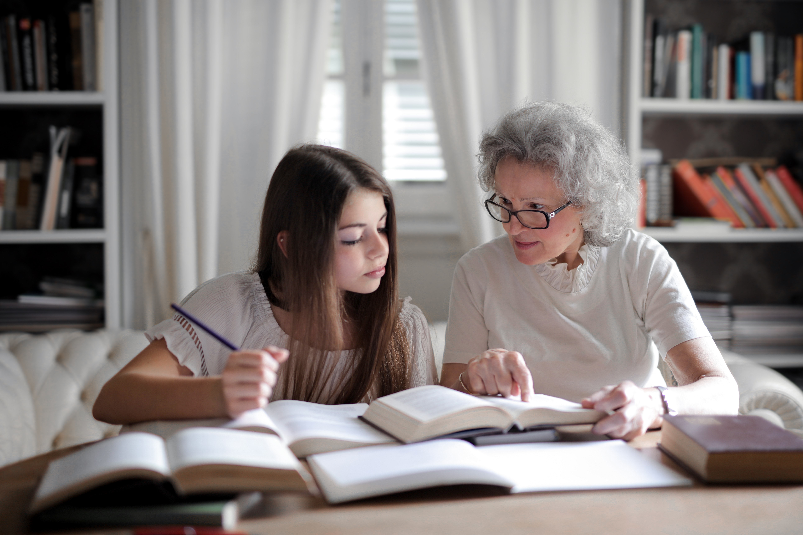
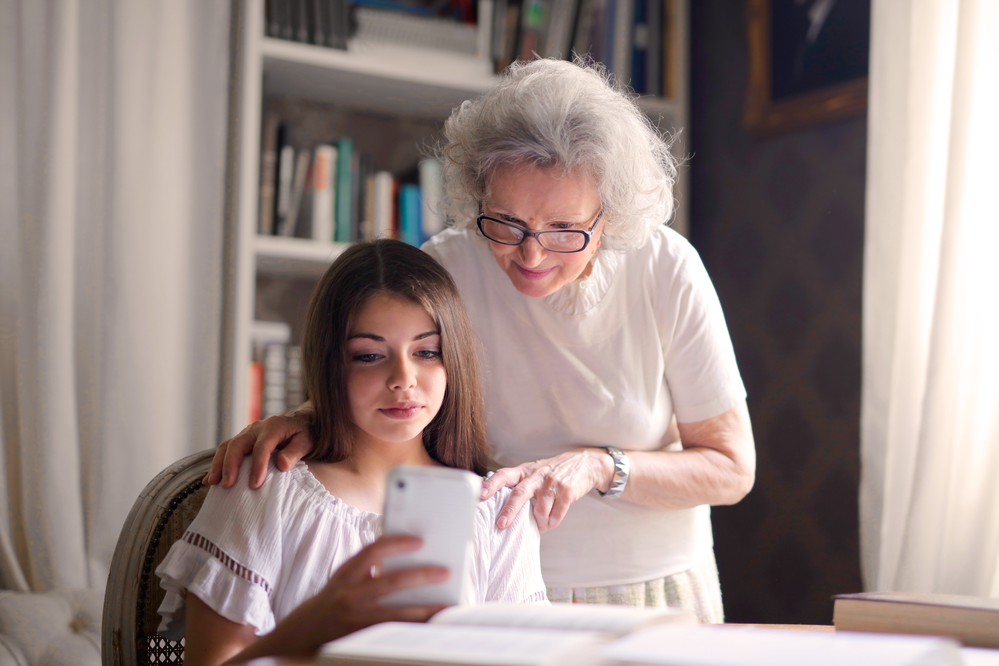

Contacto
grankids.es@gmail.com
@grandkids_es

Grandkids, nace de la ilusión de 7 jóvenes de entre 16 y 18 años. Con la oportunidad brindada por gira jóvenes de Coca Cola. Nos reunimos y analizamos sobre las carencias que tiene nuestra isla y nuestro pueblo, Ciutadella. Llegamos a la conclusión que son muchas más de las que nosotros pensábamos, pero algunas quedan fuera de nuestra alcance. Por eso decidimos escoger las propuestas que más nos afectan y podemos contribuir a mejorarlas, como son pasar tiempo con los niños y niñas, y pasar tiempo con nuestras personas mayores. Así conseguimos mejorar la salud de las personas mayores, la educación y la falta de actividades para niños, niñas y adolescentes. Con nuestra mejor intención de mejorar un poco nuestro pueblo y con la esperanza de un día poder llegar más lejos.
Nuestra idea es crear un espacio intergeneracional entre mayores y pequeños, de entre 8 a 13 años. Con el propósito de hacerse compañía y hacer más ameno su tiempo de soledad. Así poder compartir ideas y experiencias, mientras aprenden mutuamente entre ellos. A parte queremos que sea un espacio de diversión y juegos, dejando a un lado el mundo tecnológico. Con la intención de que los jóvenes dejen aparte este mundo al que cada día se van adentrando más.

grankids.es@gmail.com
@grandkids_es